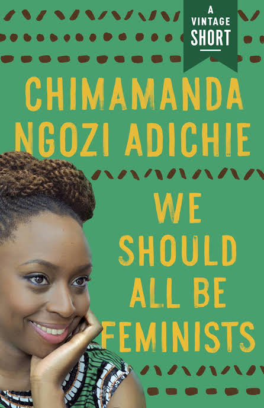

A contemporary prolific writer, changing the narrative. Giving HER a voice for the future is FEMALE!

Amanda N. Adichie
Timeline
Born: 15th September, 1997
Hails from Enugu, Enugu state
Pen name: Amanda N. Adichie
Occupation: Novelist,short story writer, non-fiction writer
Alma mater: Eastern Connecticut State University
Period: 2003-present
Notable works: Purple Hibiscus(2003), Half of a Yellow Sun(2006),
Americanah(2013)
Spouse: Ivara Esege(m. 2009)
Children: 1 daughter
View: Feminist
https://en.wikipedia.org/wiki/Chimamanda_Ngozi_Adichie
Chimamanda Ngozi Adichie (/ˌtʃɪmɑːˈmɑːndə əŋˈɡoʊzi əˈdiːtʃeɪ/ (listen) CHIM-ah-MAHN-də əng-GOH-zee ə-DEE-chay;[note 1] born 15 September 1977)[3][4] is a Nigerian writer whose works include novels, short stories and nonfiction.[5] She was described in The Times Literary Supplement as "the most prominent" of a "procession of critically acclaimed young anglophone authors [which] is succeeding in attracting a new generation of readers to African literature",[6] particularly in her second home, the United States.